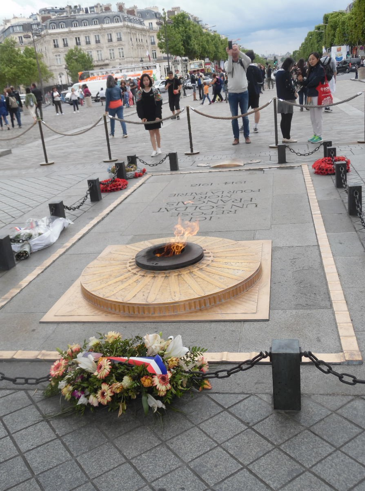
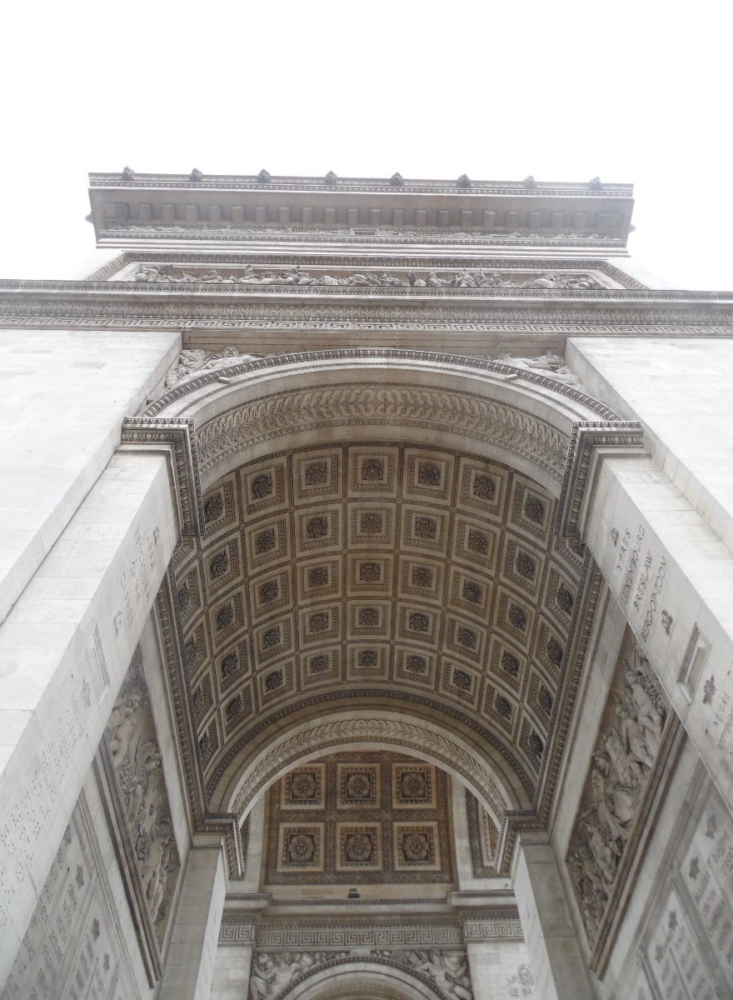
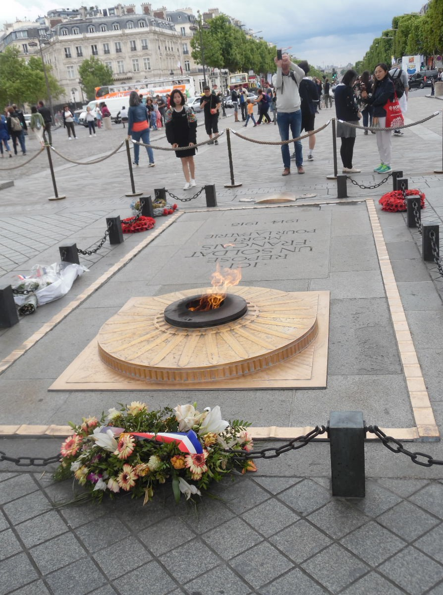
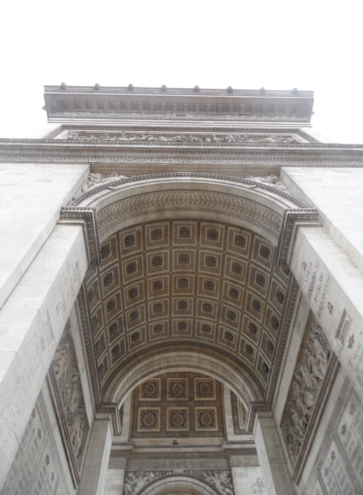
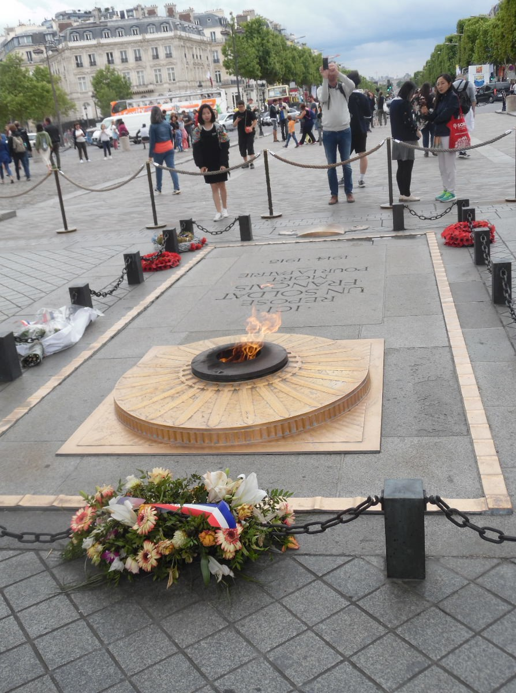
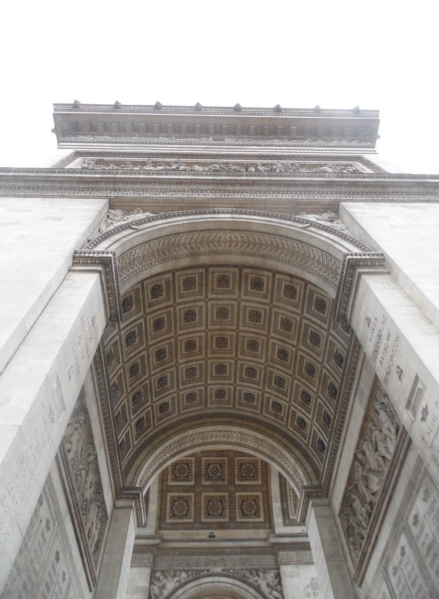

Paris is such a beautiful and quaint city. Its architecture is classic and intricate, and their gardens are gorgeous. Not to mention the delicious food and desserts.
On our first day in Paris, we walked to the Arc de Triomphe, which is at the western end of the Champs-Élysées (This is where the end of the Tour de France is held). The inside walls of Arc de Triomphe list the names of 558 French generals. On the shorter sides of the four supporting columns, there are the names of the major battles of the Napoleonic wars etched into the stone. The Tomb of the Unknown Soldier from World War I lies beneath the Arc as well.


We then went to the Louvre, which is the world's largest art museum. While we were there, we saw famous works of art, such as the Mona Lisa and the Venus de Milo.
We began our second day by going to Notre Dame. The Notre Dame has a medieval and gothic vibe, and it is gigantic. A bell brings every so often, and it plays a melody. The inside of it has many arches and mosaics. We went up to the very top of Notre Dame, where we looked down on the city as well.
After Notre Dame, we went to the Panthéon. The Panthéon is in the Latin Quarter of Paris. Upstairs, there are many fancy paintings and arches on the ceiling. You can also go underground into the crypt, where many people are buried, including Louis Braille, and Marie Curie and her husband Pierre Curie. If you look at the Panthéon from the outside, you will see that it has a dome at the top, similar to St. Paul's Cathedral in London.
We then went on a river bus (called the Batobus) on the Seine River. It was very cool to see all the different buildings around the city as we went on the Batobus.
We took the Batobus to the Jardin des Plantes, which is the main botanical garden in Paris. It has many tall trees and beautiful flowers.
To start off our third day, we took the Metro to the Sacré-Cœur. Sacré-Cœur translates to "Sacred Heart".
We then went to the Palais Garnier. This is where the Paris Opera Ballet, Paris Opera Chorus, and the Paris Opera Orchestra Perform. The inside of the building was incredibly stunning; in one room, there was gold everywhere. The theatre itself is very beautiful; it has a painted ceiling with gold and dark red velvet seats.
At the end of the day, we went to the Eiffel Tower. The Eiffel Tower is such a classy and sophisticated structure. There are plenty of places for a picnic as well. We watched the Eiffel Tower light up at 10:00 pm.
Our vacation to Paris ended here.